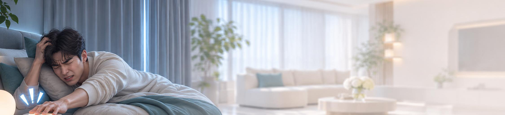
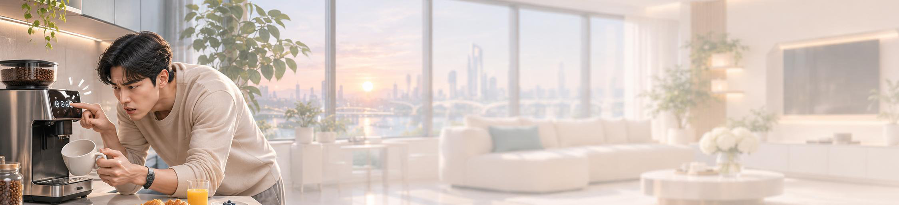
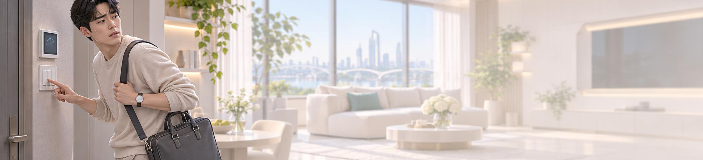
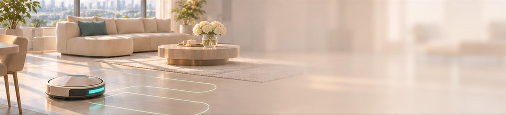
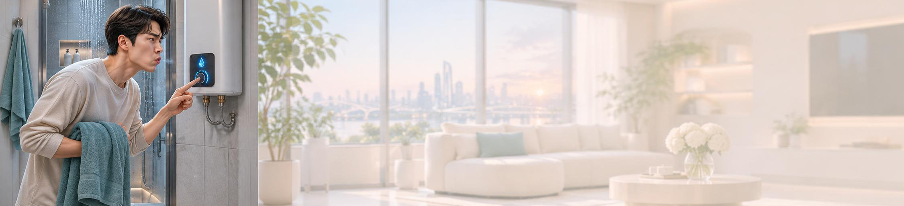
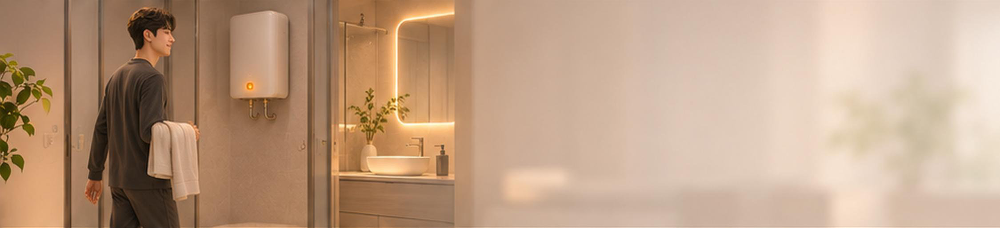
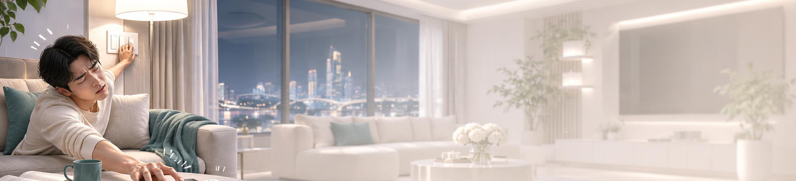
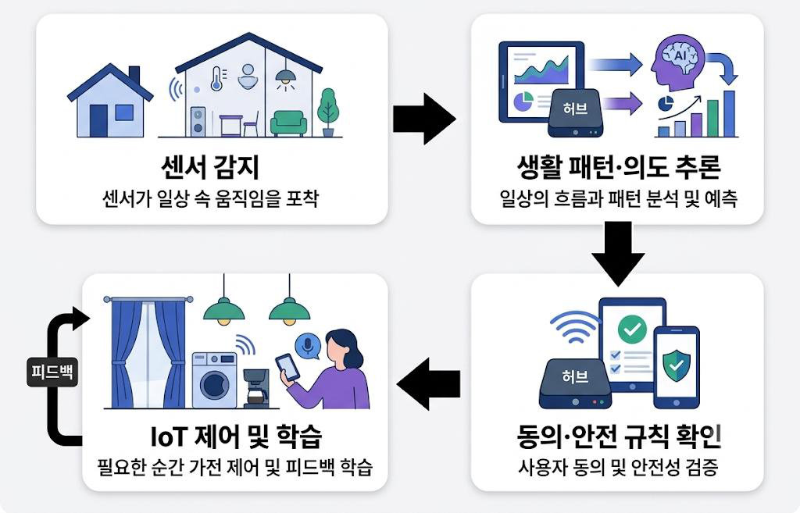

기존
알람으로 기상
알람이 울리면 직접 끄고 커튼·조명을 손으로 조작
갑작스러운 소리에 억지로 잠에서 깨어남
2050 FUTURE LIVING / 유레카 프로젝트
말하지 않아도 나를 이해하는 집
아침부터 저녁까지, 사용자 생활의 흐름을 읽고 필요한 순간을 먼저 준비하는 가정 AI
왜 집은 여전히 사람의 명령에만 의존할까?
말 한마디, 버튼 하나도 매일 반복되면 일이 된다. 제로콜은 명령을 기다리는 집을 패턴을 학습하여 먼저 준비하는 공간으로 바꾼다.

기존
알람이 울리면 직접 끄고 커튼·조명을 손으로 조작
갑작스러운 소리에 억지로 잠에서 깨어남
Zero-Call
기상 패턴에 맞춰 커튼과 조명 조절
갑작스러운 알람 대신 서서히 밝아지는 방

기존
커피머신 버튼을 눌러 직접 작동
준비하느라 아침 시간에 쫓김
Zero-Call
기상 후 생활 흐름에 맞춰 커피머신 작동
이탈 감지 시 즉시 가동 중단 및 취소

기존
조명·냉난방을 껐는지 나가서도 걱정
앱이나 리모컨으로 하나씩 조작
Zero-Call
외출 감지 후 재실 여부를 확인
빈 방의 조명·냉난방을 절전 모드로
기존
청소기를 직접 켜거나 시간을 예약
사람이 있어도 예약 시간에 그대로 작동

Zero-Call
재실·바닥 상태를 확인해 청소 시작
사람이나 반려동물이 있으면 일정 조정

기존
욕실에서 온수를 틀고 데워질 때까지 대기
데워지는 동안 물이 그대로 흘러감

Zero-Call
욕실 접근과 패턴으로 샤워 의도 예측
온수 예열·순환, 수도는 열지 않음

기존
조명·온도를 매번 직접 맞춤
하나하나 명령해야 하는 번거로움
Zero-Call
휴식 패턴에 맞춰 조도·실내 환경 조절
사용자가 언제든 수정·중지 가능
내 하루를 배워, 나에게 맞게 움직이는 집.

기대 효과: 모두에게 같은 자동화가 아니라, 쓸수록 내 생활에 맞춰지는 집. 조작과 기다림도 함께 줄어든다.
에너지 절감
−22%
월 전력 사용량 340 → 264 kWh
| 항목 | 도입 전 | 도입 후 | 변화 |
|---|---|---|---|
| 조명 | 45 | 30 | −33% |
| 냉난방 | 150 | 120 | −20% |
| 대기전력 | 30 | 9 | −70% |
| 가전·기타 | 115 | 105 | −9% |
※ 예시 데이터입니다.
안전사고 예방
−98%
평균 감지 시간 105분 → 2분
| 상황 | 도입 전 | 도입 후 |
|---|---|---|
| 가스 누출 | 30 | 1 |
| 화재(연기) | 15 | 1 |
| 누수 | 180 | 2 |
| 침입 | 60 | 1 |
| 가전 켜둠 | 240 | 5 |
※ 예시 데이터입니다.